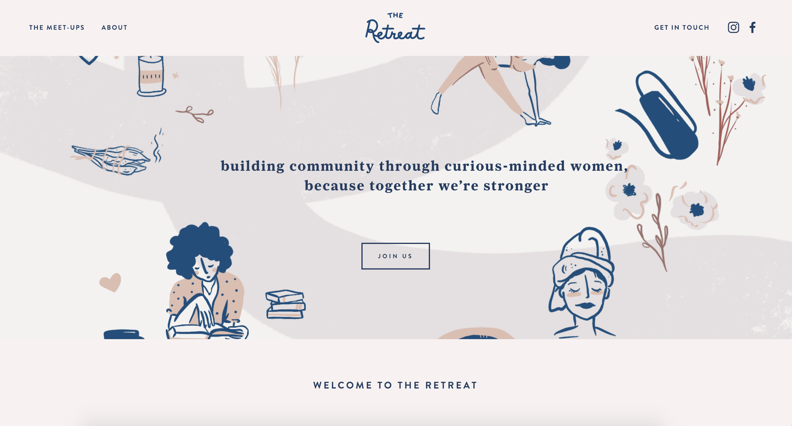

The Retreat was a direct response to the question, “How do we make friends as adults?” and the sentiment that New York City is a lonely place. I wondered while both of these things might be true, what were we actively doing to combat this? To engage in our communities? So I brought The Retreat to life with the help of a strong team. We took the former group, Nasty Women’s Retreat, that I started in 2016 and rebranded it, and launched it as the space for women to come and relearn how they build authentic connections with one another. We meet once monthly with a different featured activity, and through these shared experiences we break down barriers and learn more about each other as people.